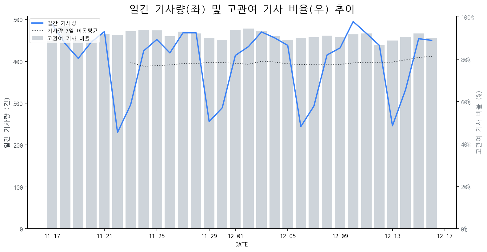

1
시장 활동 지표
기사량 추세 & 이상 징후 탐지
시장의 '전체 기사량'이 평소보다 비정상적으로 급증했는지(Spike)를 차트로 확인하고, LLM이 분석한 급등의 핵심 원인을 파악할 수 있음

고관여 기사란? 산업 연관 키워드로 수집된 기사들 중 디스플레이 키워드에 가중치를 반영하여 도출된 관련성 높은 기사
수집된 기사 수 (2025-12-16)
450
+4% WoW
기사량 변동 수준 (7일 이동평균 대비)
±6.7% 이하
2
오늘의 키워드
급격한 관심 ↑, 주목해야 할 키워드
1
레노버
+4.3σ
레노버의 혁신적인 '가로로 늘어나는 노트북' 공개로 디스플레이 기술 관심 증폭.
Related Metrics
금일 언급량: 12, 전일 대비: +12
Interpretation
신규 폼팩터 수요 증가
Next Step
핵심 토픽 'IT_OLED_Topic' 관련 신호입니다. 3번 섹션(키워드 감성분석)에서 해당 토픽의 감성 변동을 교차 확인하세요.
2
삼성디스플레이
+3.4σ
페라리 차세대 모델에 삼성디스플레이 OLED 채택 확정 소식으로 급증
Related Metrics
금일 언급량: 12, 전일 대비: +11
Interpretation
프리미엄 차량용 OLED 시장 확대
Next Step
핵심 토픽 'OLED_Topic' 관련 신호입니다. 3번 섹션(키워드 감성분석)에서 해당 토픽의 감성 변동을 교차 확인하세요.
3
oled
+3.3σ
페라리 신형 모델에 삼성디스플레이 차량용 OLED 채택 소식으로 급증했습니다.
Related Metrics
금일 언급량: 21, 전일 대비: +13
Interpretation
차량용 OLED 시장 확대 기대
Next Step
핵심 토픽 'OLED_Topic' 관련 신호입니다. 3번 섹션(키워드 감성분석)에서 해당 토픽의 감성 변동을 교차 확인하세요.
4
tv
+3.0σ
삼성·LG의 차세대 마이크로RGB TV 공개 임박 및 중국 디스플레이 업체 공세 가속화
Related Metrics
금일 언급량: 21, 전일 대비: +12
Interpretation
신기술 경쟁 심화
Next Step
'tv' 관련 상세 기사 및 경쟁사 반응 모니터링
3
실시간 Risk 키워드
경계해야 할 시그널 탐지
특정 토픽의 부정 감성 점수가 급등할 때 이를 즉시 탐지하고, "근거 기사" 링크를 통해 리스크의 실체를 빠르게 파악할 수 있음
키워드 분석 결과, 오늘은 걱정할 만한 하락 신호가 없습니다. (부정 언급량 변화: +1.5σ 이내)
4
주요 이벤트 모니터링
실시간 산업 동향 파악을 위한 주요 활동
최근 발생한 주요 기업들의 신제품 출시, 투자 등 주요 이벤트를 제공하여 매일 경쟁사 동향을 확인할 수 있음
퓨런티어, 모바일어플라이언스 등 자율주행차 관련 기업들의 주가가 상승세를 보이며 시장의 주목을 받고 있습니다. 이는 자율주행 기술의 발전과 상용화에 대한 기대감이 반영된 결과로 해석됩니다.
Impact
자율주행차 시장의 성장은 차량용 디스플레이의 수요 증가와 함께 더욱 고성능, 고화질, 기능성을 갖춘 차세대 디스플레이 기술 개발의 필요성을 증대시킬 것입니다.
Next Step
차량용 디스플레이 제조 기업은 자율주행 시스템과의 통합을 위한 인터페이스 기술, 차량 내 몰입감 증대를 위한 AR/VR 디스플레이 기술, 그리고 안전성 강화를 위한 고신뢰성 디스플레이 기술 개발에 집중해야 합니다.
삼성디스플레이의 이청 사장은 폴더블폰 시장 경쟁 우위를 선점하며 긍정적인 성과를 보이고 있습니다. 이는 삼성디스플레이가 폴더블 디스플레이 기술 혁신을 통해 시장을 주도하고 있음을 시사합니다.
Impact
삼성디스플레이의 폴더블폰 시장에서의 성공적인 경쟁 우위 확보는 관련 디스플레이 기술 개발 경쟁을 심화시키고, 폴더블 디스플레이 시장의 성장을 가속화할 것으로 예상됩니다.
Next Step
타 디스플레이 제조 기업은 폴더블 디스플레이의 차별화된 기술 개발 및 원가 경쟁력 확보를 통해 시장 점유율을 확대할 방안을 모색해야 합니다.
12월 3주 주요 제조업 전망에 따르면, 디스플레이 시장은 연말 특수와 신규 기술 도입으로 인한 수요 변동성이 예상됩니다. 공급망 안정화와 생산 효율성 증대가 주요 과제로 부상하고 있습니다.
Impact
이 전망은 디스플레이 패널 수요 예측, 생산 계획 수립, 재고 관리 등 시장 참여 기업들의 전략 결정에 중요한 영향을 미칠 것입니다.
Next Step
시장 수요 변화에 대한 면밀한 모니터링을 통해 유연한 생산 및 재고 관리 전략을 수립하고, 신규 기술 도입 및 투자 기회를 신중하게 검토해야 합니다.
글로벌 디스플레이 시장에서 기술 발전과 정책 간의 충돌이 심화되며, 규제와 시장 논리가 맞서는 양상이 나타났다. 이는 디스플레이 산업의 주요 사업자들이 직면한 복잡한 환경을 시사한다.
Impact
이번 이벤트는 디스플레이 기술 개발 방향, 투자 결정, 그리고 시장 진출 전략에 정책적 불확실성을 증대시켜 기업의 성장 경로에 영향을 미칠 수 있다.
Next Step
디스플레이 제조 기업은 규제 동향을 면밀히 모니터링하고, 잠재적 정책 변화에 유연하게 대응할 수 있는 기술 로드맵을 재검토해야 한다.
5
지금 주목해야 할 뉴스 TOP 3
특허전쟁 완승 삼성, 고개 숙인 中 BOE와 '실리적 동거' 택했다
삼성디스플레이가 제기한 영업비밀 침해 소송에서 패배한 BOE가 삼성의 '기술 주권' 앞에 무릎을 꿇고 공급망 재진입을 요청한것은 단순한 비즈니스 미팅을 넘어 미·중 기술 패권 전쟁의 냉혹한 현실을 보여주는 상징적 사건으로 해석된다.
12월 3주 주요 제조업 전망
로컬 요약 모델 실행 중 오류 발생: 제목을 클릭하여 기사 전문을 확인할 수 있습니다.
호주 '안방' 위협받는 삼성·LG … 中 공세에 프리미엄 TV '흔들'
저가 공세로 성장해 온 중국 업체들이 고가 제품 시장까지 영향력을 넓히면서, 북미·서유럽 등 주요 프리미엄 시장에서 국내 기업의 입지도 흔들릴 수 있다는 우려가 커지고 있다.16일 시장조사업체 옴디아에 따르면 올해 3분기 아시아·오세아니아 TV 출하량은 전년 대비 7.7% 증가한 991만3400대로 집계됐다.